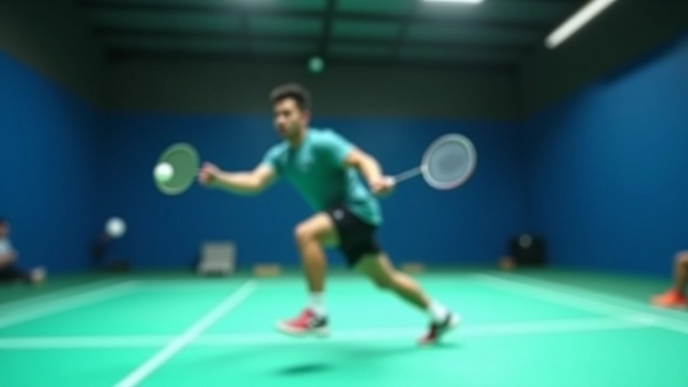
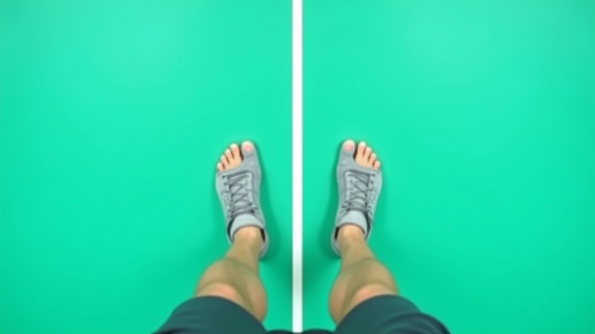
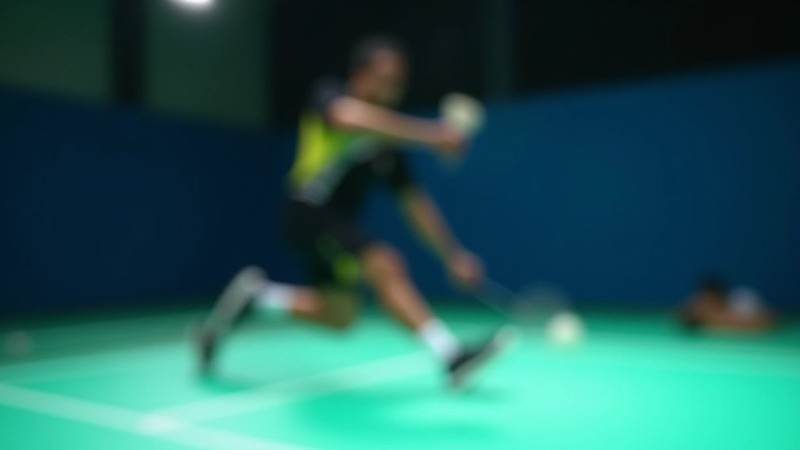
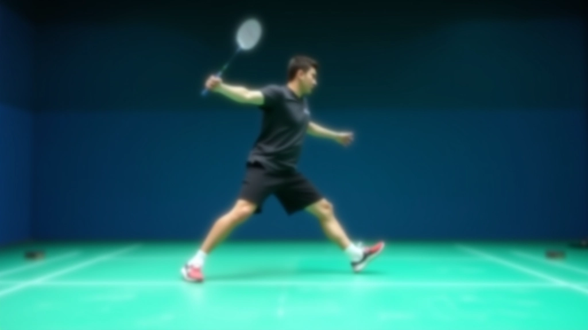
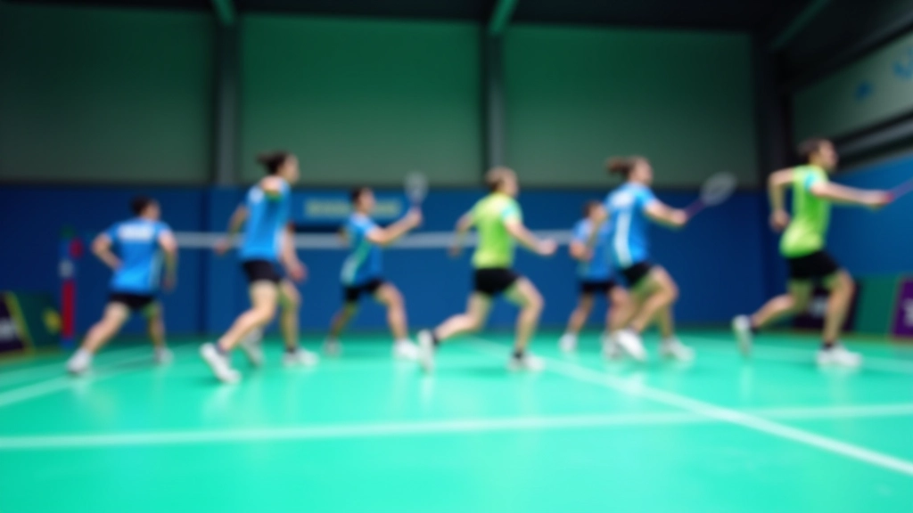

تحليل الحركة من الخبراء
تعلم من أخطاء شائعة يرتكبها اللاعبون. هذه المقالة تشرح ما يجب تجنبه وكيفية تصحيح تقنيتك بسرعة.

الكاتب
فريق حركة الريشة التحريري
فريق التحرير والمحتوى
كتبه فريق حركة الريشة التحريري، مختص بتقديم إرشادات عملية وسهلة التطبيق في مجال تدريب الريشة الطائرة.
لماذا تحليل الحركة مهم جداً
الفرق بين لاعب متوسط ولاعب ممتاز ليس في السرعة فقط. إنه في الكفاءة — في الطريقة التي تحرك بها جسدك على الملعب. نحن نرى أخطاء شائعة يومياً. لاعب يسقط قليلاً عند التوقف المفاجئ. آخر يضيع ثانية بسبب وضع قدميه الخاطئ. هذه الأخطاء الصغيرة تراكمية.
عندما تفهم ما يجب تجنبه، يمكنك التركيز على ما يجب فعله. الهدف هنا بسيط: أن تصبح أسرع وأكثر استقراراً. لا نتحدث عن تغييرات جذرية. نحن نتحدث عن تصحيحات صغيرة لها تأثير كبير.

الخطأ الأول: موضع القدم غير الصحيح
معظم اللاعبين لا يفكرون في موضع قدميهم أثناء التحضير. يقفون بشكل مسطح، والقدمان متوازيتان. هذا خطأ كبير. القدم الداخلية يجب أن تكون أمام القدم الخارجية قليلاً. هذا الموضع يعطيك توازناً أفضل وسرعة انطلاق أسرع.
عندما تكون قدماك في الموضع الصحيح، يمكنك الانطلاق من أي اتجاه في أقل من 0.2 ثانية. بدون هذا الموضع، ستحتاج إلى وقت إضافي للتعديل. في لعبة سريعة جداً، هذه الثانية قد تعني الفارق بين ضربة فائزة وخسارة النقطة.
- القدم الداخلية أمام الخارجية بـ 15-20 سم
- الوزن موزع بالتساوي على القدمين
- الركبتان منحنيتان قليلاً دائماً
- الكتفان محاذيان للملعب


الخطأ الثاني: خطوات كبيرة جداً
الخطأ الثاني الذي نراه باستمرار هو الخطوات الكبيرة جداً. اللاعب يريد الوصول للكرة بسرعة، فيأخذ خطوات طويلة. لكن هذا يؤدي لفقدان التوازن وتأخير في التوقف. الخطوات الصغيرة والسريعة أفضل بكثير.
تخيل أنك تركض مع خطوات طويلة مقابل خطوات قصيرة وسريعة. أيهما يعطيك تحكماً أفضل؟ بالتأكيد الخطوات القصيرة. في الريشة الطائرة، التحكم هو كل شيء. خطوات 30-40 سم هي الأمثل. أسرع وأكثر أماناً وأسهل للتحكم.
نصيحة سريعة: عند التدريب، ركز على التكرار السريع للخطوات الصغيرة. خذ 10 خطوات في المكان بسرعة، ثم انطلق. ستشعر بالفرق فوراً.
مقالات ذات صلة

البدء بتمارين السلم الأساسية
تعرف على الخطوات الأولى الصحيحة لتمارين سلم السرعة. تشرح هذه المقالة أنماط الحركة الأساسية والتقنيات الصحيحة.
اقرأ المقالة
حركة القدمين المتقدمة والسرعة
تطوير سرعة الاستجابة والحركة الجانبية. تركز هذه المقالة على التقنيات المتقدمة والحركات الديناميكية.
اقرأ المقالة
برنامج تمرين أسبوعي منظم
خطة عملية لتطبيق تمارين السلم بشكل منتظم. يتضمن جدول زمني واضح مع نصائح لتجنب الإصابات.
اقرأ المقالةالخطأ الثالث: التوقف غير المتحكم به
يسيء الكثير من اللاعبين فهم التوقف. يعتقدون أنه يحدث فقط عندما يضربون الكرة. لكن التوقف هو أساس كل حركة. عندما تتوقف بشكل سيء، تفقد التوازن وتحتاج إلى وقت أطول للانطلاق مجدداً.
الطريقة الصحيحة للتوقف: استخدم كلا القدمين في نفس الوقت. قفزة صغيرة جداً — حوالي 5-10 سم فقط — وتوقف فوري. هذا يُسمى "خطوة التوازن". بعدها يمكنك الانطلاق في أي اتجاه. التوقف السيء يأخذ ضعف الوقت ويزيد احتمالية الإصابة.


كيفية تصحيح تقنيتك بسرعة
الآن تعرف الأخطاء الثلاثة الشائعة. السؤال هو: كيف تصححها؟ الجواب يبدو بسيطاً لكنه قوي جداً — الممارسة المركزة. لا تمارس الحركة مع كرة أو ضربة. فقط الحركة. قف وخذ خطوات صغيرة وسريعة، ثم توقف. كرر هذا 50 مرة. بعدها، أضف الكرة.
نعم، 50 مرة قد تبدو كثيرة. لكنك لن تستغرق أكثر من 10 دقائق. والفائدة حقيقية. بعد أسبوع من هذا التدريب، ستشعر بالفرق. حركتك ستكون أسرع، وتوازنك أفضل. لا سحر هنا — فقط ممارسة منتظمة.
الخلاصة
تحليل الحركة ليس معقداً. إنه يتعلق بفهم الأساسيات وتصحيح الأخطاء الشائعة. موضع القدم الصحيح، خطوات صغيرة وسريعة، وتوقف متحكم به. هذه الثلاث نقاط ستغير طريقة حركتك على الملعب.
لا تتوقع نتائج فورية. التغيير يحتاج وقتاً. لكن إذا كنت منتظماً في التدريب، ستشعر بالتحسن في غضون أسبوعين. وبعد شهر؟ ستكون لاعباً مختلفاً تماماً. أسرع، أكثر استقراراً، وأقل عرضة للإصابات.
جاهز لتحسين حركتك؟ ابدأ بالتدريب اليوم وركز على الأساسيات.
استكشف المزيد من التمارينملاحظة مهمة
هذه المقالة توفر معلومات تعليمية عن تقنيات حركة القدمين في الريشة الطائرة. المحتوى مقدم لأغراض إعلامية فقط ولا يشكل نصيحة تدريب شخصية. قد تختلف الحاجات والظروف من شخص لآخر. نوصي بالتدريب تحت إشراف مدرب محترف متخصص في الريشة الطائرة. إذا كنت تعاني من أي إصابة أو ألم، استشر متخصصاً في الصحة قبل البدء بأي برنامج تدريبي جديد.